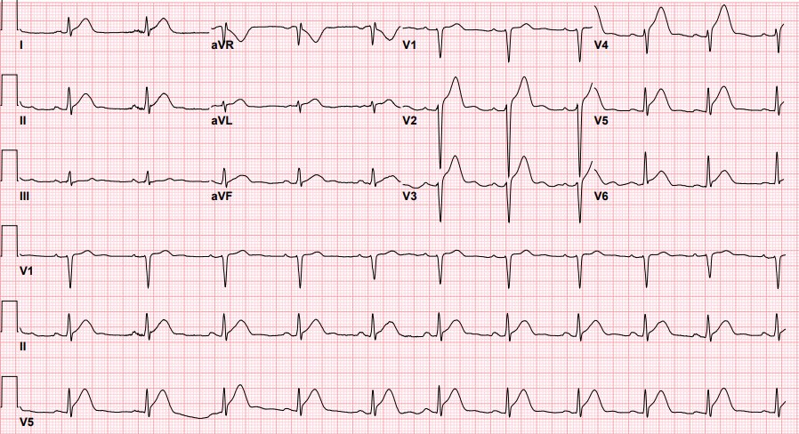
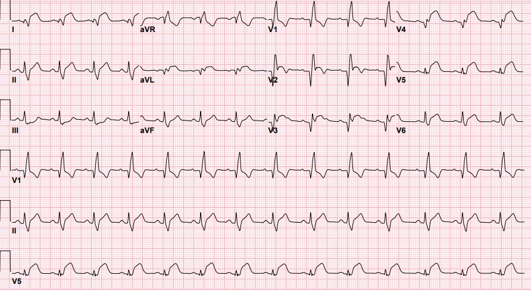
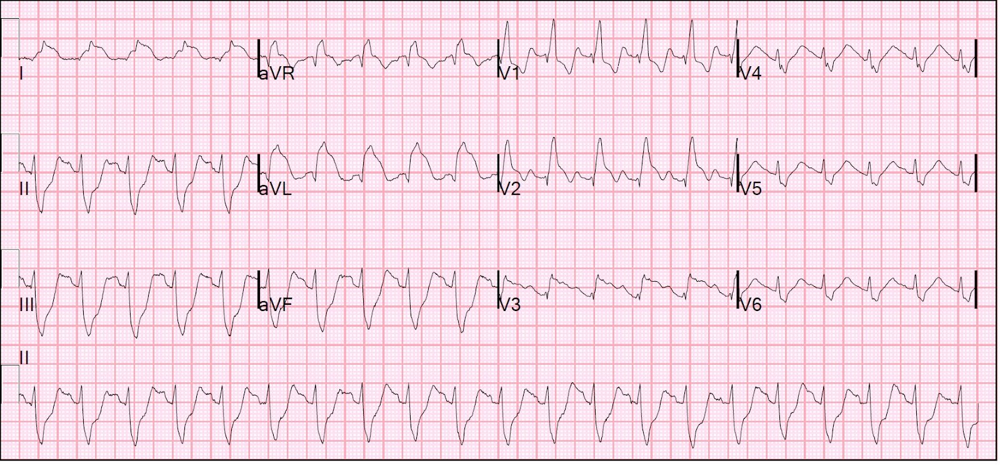
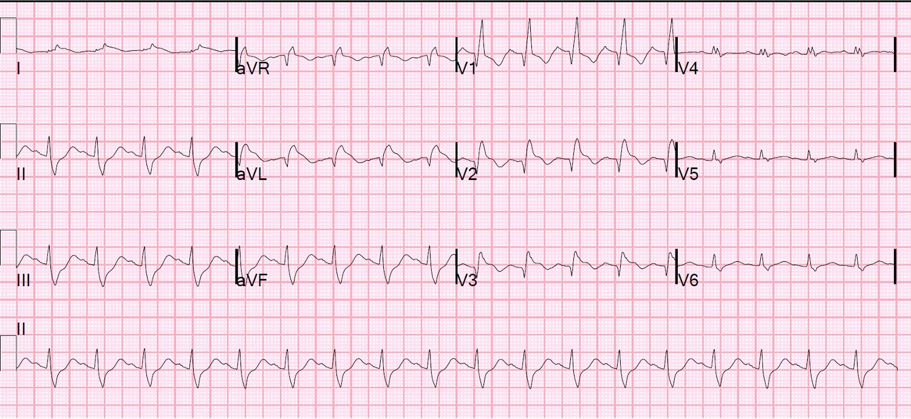
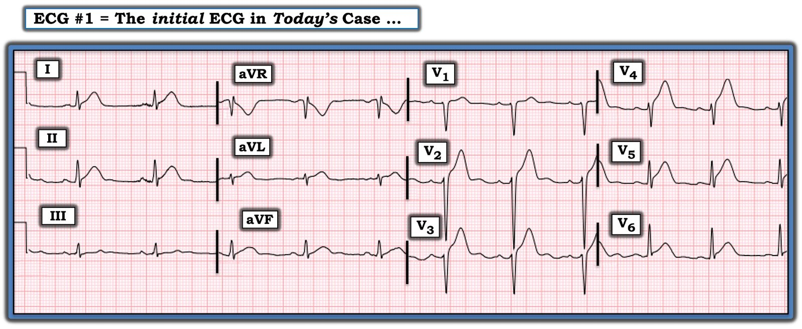

09/01/2023 — Một thiếu niên đau ngực, troponin dưới giới hạn phát hiện và “tái cực sớm lành tính”
Bản dịch tiếng Việt của bài "A teenager with chest pain, a troponin below the limit of detection, and “benign early repolarization”" – Dr. Smith’s ECG Blog. Giữ nguyên toàn bộ 6 hình ảnh của bản gốc.
Gửi bởi một người ẩn danh, bài viết của Pendell Meyers
Một bệnh nhân nam ở tuổi thiếu niên đến khám vì cảm giác khó chịu ở ngực và khó thở, khởi phát trong lúc đang tập luyện nhưng không có chấn thương rõ ràng. Cậu ngừng tập ngay lập tức và các triệu chứng bắt đầu cải thiện. Tối hôm đó, cậu lại thấy khó chịu ở giữa ngực, khó thở và nôn. Các triệu chứng kéo dài liên tục kể từ đợt thứ hai này và vẫn còn khi đến viện, thời điểm có vẻ là chưa tới 1 đến 2 giờ kể từ khi khởi phát triệu chứng. Trước đây chưa từng có triệu chứng tương tự. Trước đây chưa từng có đau ngực, chóng mặt, choáng váng hay khó thở bất thường khi gắng sức. Không có tiền sử gia đình về đột tử do tim, bệnh cơ tim, bệnh mạch vành sớm (premature CAD) hay các vấn đề tim mạch khác. Cậu phủ nhận đau đầu hay đau cổ liên quan đến gắng sức.
Sinh hiệu ban đầu: HA 116/84, nhịp thở 36, tần số tim 85 lần/phút, SpO2 98% khi thở khí trời


Diễn giải điện tâm đồ của Meyers: Dễ dàng chẩn đoán tắc LAD. Nhịp xoang, QRS bình thường (ngoại trừ tăng tiến sóng R kém do OMI LAD), sau đó là ST chênh lên (STE) rất rõ từ V2-V6, sóng T tối cấp ở V2-V6, I, aVL, II, III, kèm biến dạng phần cuối QRS (TQRSD) ở V6 (cho đến nay trong y văn chỉ được mô tả là có giá trị chẩn đoán OMI nếu xuất hiện ở V2-V3). Đây không phải là “lan tỏa”, mà đơn giản là vùng trước, vùng bên và nhiều khả năng cả vùng mỏm. 50% STEMI do LAD không có dấu hiệu soi gương ở các chuyển đạo dưới, và nhiều OMI LAD thay vào đó lại có STE và/hoặc sóng T tối cấp (HATW) ở các chuyển đạo dưới. Điện tâm đồ này cũng dễ dàng đạt tiêu chuẩn STEMI ở tất cả các chuyển đạo V2-V6. Bản ghi này được gửi cho tôi mà không kèm thông tin gì và tôi đã trả lời ngay rằng nó có giá trị chẩn đoán OMI LAD. Tôi tính kết quả công thức 4 biến phân biệt tái cực sớm với OMI thành trước là 22.34 (nghiêng hẳn về OMI LAD), sử dụng STE khoảng 4mm tại 60 msec sau điểm J ở V3, QTc 425, sóng R 2 mm ở V4, QRS 23 mm ở V2.
Tôi gửi điện tâm đồ này cho Dr. Smith, chỉ kèm thông tin rằng đây là một bệnh nhân 17 tuổi bị đau ngực. Câu trả lời của ông giống hệt:
“OMI LAD diện rộng. Phòng thông tim.”
“Có thể là một ca viêm cơ tim bất thường, nhưng là OMI cho đến khi chứng minh được điều ngược lại.”
Điện tâm đồ được diễn giải là “tái cực sớm lành tính.”
Xét nghiệm troponin I tại chỗ (POC) ban đầu (khoảng tham chiếu: dưới 0.05 ng/mL) có kết quả tại khu phân loại là dưới 0.05 ng/mL (thấp hơn giới hạn phát hiện).
Công thức máu (CBC) và bảng chuyển hóa cơ bản (BMP) trong giới hạn bình thường.
Cậu được cho dùng lorazepam và olanzapine vì lo âu và khó chịu.
Hai giờ sau khi đến viện, cậu than vẫn còn khó chịu ở ngực. Cậu được hỏi về việc có thể đã sử dụng chất gây nghiện hay không, và cậu thừa nhận có hút một ít cần sa sau khi tập luyện. Cậu được cho dùng ketorolac và truyền dịch tĩnh mạch. Mẫu nước tiểu được gửi làm xét nghiệm độc chất.
Ba giờ sau khi đến viện, troponin được chỉ định xét nghiệm lại.
Troponin lần thứ 2 này trả về tăng ở mức 0.39 ng/mL.
Troponin lần thứ 3 có kết quả 30 phút sau đó ở mức 0.88 ng/mL.
Điện tâm đồ ghi lại được thực hiện khoảng 4 giờ sau khi đến viện, khi vẫn còn đau (khoảng 6 giờ kể từ lúc khởi phát đau, theo những gì chúng tôi biết):


Lúc này một “báo động tim mạch” được kích hoạt, và bác sĩ tim mạch trực xem điện tâm đồ và “không nghĩ rằng cậu cần thông tim cấp cứu.” Bệnh nhân được chuyển tới một trung tâm tuyến ba và nhập vào đơn vị hồi sức tích cực nhi (PICU).
Cậu nằm ở PICU vài ngày, được làm các thăm dò bao gồm:
Troponin liên tiếp: tăng từ 5,700 ng/L (không rõ là I hay T) đến trên 25,000 ng/L (vượt giới hạn trên có thể báo cáo của phòng xét nghiệm). Không đo thêm troponin nữa.
Chụp CT mạch máu ngực: không có bóc tách động mạch chủ hay thuyên tắc phổi.
X-quang ngực liên tiếp: phù phổi hai bên tiến triển.
Siêu âm tim: thất trái giãn nặng, phân suất tống máu giảm nặng ở mức 10%, giảm động nặng thất trái từ các đoạn giữa đến mỏm, trong khi các đoạn đáy được bảo tồn tốt hơn. “Hình ảnh phù hợp với bệnh cơ tim Takotsubo.” Không thấy huyết khối ở mỏm khi dùng thuốc cản âm Definity.
Huyết thanh học Coxsackie âm tính.
PCR Covid âm tính.
Xét nghiệm ma túy trong nước tiểu (UDS) chỉ dương tính với cần sa.
Sau đó cậu được chuyển tới một bệnh viện nhi tuyến cuối (tuyến bốn). Tại đây, troponin được theo dõi tăng lên tới 100,000 ng/L (vẫn không rõ là troponin I hay T). Chụp CT mạch máu ngực lại (không phải CT mạch vành, không rõ theo quy trình nào) cho thấy có thể có phình LAD và huyết khối.
Cuối cùng, chụp mạch vành đã được thực hiện (ít nhất 5 ngày sau khi đến viện), xác nhận phình LAD với gánh nặng huyết khối lớn, dòng chảy TIMI 0; đã tiến hành lấy huyết khối. Không có thêm chi tiết nào về lần thông tim.
Có nghi ngờ về khả năng mắc bệnh Kawasaki không được chẩn đoán khi còn nhỏ.
MRI tim cho thấy EF 25% với các rối loạn vận động thành khu trú tương tự. Cậu được chuyển sang thuốc điều trị suy tim đường uống và xuất viện về nhà sau hơn một tuần một chút kể từ khi đến viện.
Vài tuần sau, cậu tái nhập viện vì đợt cấp suy tim, được dùng lợi tiểu và lại xuất viện.
Thông tin cuối cùng có được là bệnh nhân đang được đánh giá để ghép tim.
Điểm cần học chính của Smith:
Yếu tố nguy cơ tồi tệ nhất dẫn đến kết cục xấu trong OMI là tuổi trẻ, vì các bác sĩ tim mạch không thể tin rằng một người trẻ có thể bị OMI. Điều này đã bị khắc sâu vào đầu họ.
Ca này làm tôi nhớ đến nữ điều dưỡng 27 tuổi hoàn toàn khỏe mạnh này, trước đó khỏe mạnh, đến viện với phù phổi cấp và điện tâm đồ dưới đây có giá trị chẩn đoán tắc LAD đoạn gần, và đã bị gạt đi vì tuổi của cô. Chỉ sau khi troponin của cô đạt đỉnh 500,000 ng/L cô mới được chụp mạch vành, cho thấy tắc 100% thân chung động mạch vành trái do nứt vỡ mảng xơ vữa. Cô tử vong trước khi kịp được ghép tim. Họ chỉ đơn giản là không thể tin rằng một phụ nữ trẻ lại có thể bị OMI.


RBBB, LAFB, và STE ở I, aVL, V2 và V3.
Có giá trị chẩn đoán OMI diện rộng. Hóa ra là tắc 100% thân chung động mạch vành trái.
Đây là cô ấy vài giờ sau, với sóng Q mới và troponin đang tăng. Họ vẫn không chịu chụp mạch vành cho cô:


Xem các ca OMI khác ở bệnh nhân trẻ:
A 16 year old girl has syncope while playing basketball….. (Một bé gái 16 tuổi bị ngất khi đang chơi bóng rổ…..)
Chest Pain in a Male in his 20’s; Inferior ST elevation: Inferior lead “early repol” diagnosed. Is it? (Đau ngực ở một nam giới tuổi 20; ST chênh lên vùng dưới: được chẩn đoán “tái cực sớm” ở chuyển đạo dưới. Có đúng vậy không?)
24 yo woman with chest pain: Is this STEMI? Pericarditis? Beware a negative Bedside ultrasound. (Phụ nữ 24 tuổi đau ngực: Đây là STEMI? Viêm màng ngoài tim? Hãy cảnh giác với kết quả siêu âm tại giường âm tính.)
An athletic 30-something woman with acute substernal chest pressure (Một phụ nữ ngoài 30 tuổi chơi thể thao bị cảm giác đè ép sau xương ức cấp tính)
Another STEMI in a Young Person with no CP or SOB: Why We Should Record an ECG for Unexplained Nonspecific Symptoms (Lại một STEMI ở người trẻ không đau ngực hay khó thở: Vì sao chúng ta nên ghi điện tâm đồ khi có các triệu chứng không đặc hiệu chưa giải thích được)
A woman in her 30s with sudden chest pain, nausea, and diaphoresis. Was her cardiology management appropriate? (Một phụ nữ tuổi 30 đau ngực đột ngột, buồn nôn và vã mồ hôi. Xử trí tim mạch cho cô ấy có phù hợp không?)
A deadly alcohol binge: a man in his 30s with chest pain and initial high sensitivity troponin I within normal limits (Một trận nhậu chết người: nam giới tuổi 30 đau ngực với troponin I độ nhạy cao ban đầu trong giới hạn bình thường)
32 yo with right sided chest pain. Zero ST Elevation, but that does not matter. (Bệnh nhân 32 tuổi đau ngực bên phải. Không hề có ST chênh lên, nhưng điều đó không quan trọng.)
A young peripartum woman with Chest Pain (Một phụ nữ trẻ trong giai đoạn chu sinh bị đau ngực)
Xem ca này về một sai lầm về cơ bản là ngược lại:
Hiểu được điện tâm đồ đặc hiệu chẩn đoán (pathognomonic) này hẳn đã mang lại lợi ích rất lớn cho bệnh nhân.
Những điểm cần học:
Kỹ năng đọc điện tâm đồ là then chốt để chẩn đoán OMI. Hãy dùng công thức (Subtle Anterior STEMI Calculator (4-Variable) – MDCalc) để hỗ trợ khi chẩn đoán phân biệt là giữa ST chênh lên biến thể bình thường (“tái cực sớm lành tính”) và OMI thành trước.
Người trẻ vẫn có thể bị tắc mạch vành cấp, dù là do nứt vỡ mảng xơ vữa điển hình, hay do bất thường mạch vành, phình mạch vành, bóc tách, co thắt, v.v.
Trong tương lai, chụp CT mạch vành cấp cứu có thể là một lựa chọn hợp lý khi OMI chưa được chẩn đoán bằng điện tâm đồ nhưng bác sĩ tim mạch còn ngần ngại chụp mạch vành.
Rối loạn vận động thành của bệnh cơ tim Takotsubo và của OMI LAD có thể tương tự nhau.
Một ca thông tim dương tính giả, không can thiệp gì, ở một bệnh nhân trẻ gần như vô hại. Một ca OMI bị bỏ sót như thế này có thể gây hậu quả thảm khốc.

==================================
BÌNH LUẬN CỦA TÔI, bởi KEN GRAUER, MD (9/1/2023):
==================================
“Hãy điều trị bệnh nhân — Không phải điều trị tuổi của bệnh nhân”. Ca bệnh đáng buồn hôm nay là một ca cần được xem xét lại về chuyên môn. Thật đáng tiếc là không có cách nào biện minh cho chuỗi sự kiện dẫn đến chậm trễ chẩn đoán và điều trị — và cuối cùng là một ổ nhồi máu thảm khốc khiến một thiếu niên trước đó khỏe mạnh trở thành ứng viên ghép tim.
Nhồi máu cơ tim cấp CÓ THỂ xảy ra ở bệnh nhân trẻ tuổi
Xu hướng xem nhẹ cơn đau ngực mới xuất hiện ở một thiếu niên như là triệu chứng thứ 1 của nhồi máu cơ tim cấp là điều dễ hiểu. Tắc mạch vành cấp hầu như luôn xảy ra ở những bệnh nhân đã qua tuổi thiếu niên từ lâu. Dù vậy — nhồi máu cơ tim cấp vẫn xảy ra ở bệnh nhân trẻ tuổi (hãy xem ca bệnh mà Dr. Smith nhắc tới ở trên — cũng như các đường link của Dr. Meyers ở cuối phần bàn luận của anh, dẫn tới nhiều ca nhồi máu cơ tim cấp ở người trẻ tuổi đã được đăng trên Dr. Smith’s ECG Blog).
- Có y văn về chủ đề này (GGF van der Schoot và cs.: Neth Heart J 28(6):301-308, 2020 — và — Egred và cs. — Postgrad Med 81(962): 741-745, 2005 — đó mới chỉ là 2 báo cáo).
- Nhồi máu cơ tim cấp ở bệnh nhân trẻ tuổi có thể do tắc mạch vành cấp được thúc đẩy bởi các yếu tố nguy cơ kinh điển (chẳng hạn hút thuốc lá từ khi còn nhỏ tuổi) — ở những người có cơ địa đặc biệt (tức là đột biến yếu tố V Leiden — hoặc hội chứng thận hư — cả hai đều liên quan đến tình trạng tăng đông) — và/hoặc trong các bệnh lý gia đình như tăng cholesterol máu di truyền.
- Ngoài ra — còn có một loạt nguyên nhân tiềm tàng không do xơ vữa gây nhồi máu cấp ở bệnh nhân trẻ tuổi. Chúng bao gồm co thắt động mạch vành (có thể xảy ra do dùng cocaine hoặc uống rượu bia quá độ) — cầu cơ tim (có thể là nguyên nhân gây thiếu máu cục bộ cấp từng lúc) — bất thường giải phẫu của một động mạch vành (có thể biểu hiện bằng vỡ đột ngột gây nhồi máu cấp hoặc đột tử ở bất kỳ tuổi nào!).
- Các loại nguyên nhân tiềm tàng không do xơ vữa khác gây nhồi máu cấp ở bệnh nhân trẻ tuổi bao gồm bệnh viêm hệ thống (tức là lupus, viêm khớp dạng thấp, u hạt Wegener) — huyết khối không do bệnh mạch vành (tức là viêm nội tâm mạc, rối loạn đông máu) — thai kỳ (với tình trạng tăng đông của nó).
- Gây tổn thương nội mạc là một cơ chế tiềm tàng khác của nhồi máu cơ tim cấp ở bệnh nhân trẻ tuổi. Điều này có thể xảy ra do chấn thương ngực kín hoặc một stress cấp tính khác tạo ra lực cắt cực mạnh đột ngột lên động mạch vành (có thể gây rách nội mạc dẫn đến huyết khối trong lòng mạch). Tổn thương nội mạc cũng có thể gặp trong bóc tách động mạch vành tự phát — hoặc do “chấn thương giảm tốc” (tức là do tai nạn ô tô hoặc tai nạn xe cộ khác).
- ĐIỀU CỐT LÕI: Mặc dù các căn nguyên kể trên không phải là nguyên nhân thường gặp gây nhồi máu cấp ở thanh thiếu niên hay người trẻ tuổi — chúng vẫn xảy ra! Và, cũng như hầu hết các cân nhắc chẩn đoán trong y khoa — nếu chẩn đoán phân biệt loại trừ những “căn nguyên tiềm tàng khác” như vậy chỉ vì chúng không thường gặp, hoặc vì bệnh nhân “còn quá trẻ để bị nhồi máu cơ tim” — thì những căn nguyên tiềm tàng khác này sẽ bị bỏ sót!
- LIÊN QUAN đến ca này: Bệnh nhân thiếu niên hôm nay đang “tập tạ” vào lúc các triệu chứng khởi phát. Đây có phải là trùng hợp? — HAY — Phải chăng việc gắng sức và rặn mạnh khi nâng tạ đã tạo ra một lực cắt cấp tính — dẫn đến rách nội mạc, gây huyết khối trong lòng mạch (một chuỗi sự kiện có thể càng dễ xảy ra hơn nếu người trẻ tuổi có vẻ khỏe mạnh này có sẵn một yếu tố thuận lợi nào đó chưa được phát hiện trước đây, chẳng hạn như một bất thường giải phẫu động mạch vành).
Thêm về CA BỆNH hôm nay: Hãy điều trị bệnh nhân …
Khi quay lại đọc kỹ bệnh sử trong ca hôm nay — tôi bị ấn tượng bởi các dữ kiện trong bệnh cảnh của bệnh nhân này: i) Bệnh nhân là một thiếu niên trước đó khỏe mạnh. Cậu chưa từng bị đau ngực trước đây!; ii) Bệnh nhân này xuất hiện đau ngực mới và khó thở đủ nặng để khiến cậu phải ngừng tập ngay lập tức; và, iii) Mặc dù tạm thời thấy đỡ hơn sau khi ngừng tập — các triệu chứng của cậu tái phát và đủ nặng để cậu phải đến khoa cấp cứu (ED) tối hôm đó vì đau ngực nặng kéo dài.
- ĐIỀU CỐT LÕI: Với hiểu biết rằng nhồi máu cơ tim cấp có thể xảy ra ở bệnh nhân trẻ tuổi — bệnh sử nêu trên đặt “trách nhiệm chứng minh” hoàn toàn lên chúng ta với tư cách người cung cấp dịch vụ y tế, phải loại trừ một biến cố cấp tính nào đó — chứ không phải ngược lại. Chúng ta phải chứng minh rằng bệnh nhân bị đau ngực mới, nặng và đang tiếp diễn này không mắc một biến cố cấp tính (hoặc một nguyên nhân khác có thể điều trị được gây ra các triệu chứng của cậu).
- Việc chủ động tìm nguyên nhân gây đau ngực nặng kéo dài của bệnh nhân này không được phục vụ bằng cách chờ 4 giờ mới ghi lại điện tâm đồ ban đầu (nhất là khi giá trị troponin đang bắt đầu tăng trong bối cảnh đau ngực nặng kéo dài).
- Nó cũng không được phục vụ bằng việc hủy kích hoạt phòng thông tim bất chấp các thay đổi động rõ ràng trên điện tâm đồ ghi lại, cho thấy RBBB mới xuất hiện kèm ST chênh lên dai dẳng trong bối cảnh đau ngực kéo dài.
- T.B. (P.S.): Mặc dù điện tâm đồ ban đầu trong ca hôm nay không giống viêm cơ tim cấp — điều quan trọng là phải đưa khả năng này vào cân nhắc mỗi khi một bệnh nhân trẻ tuổi đến viện với đau ngực và thay đổi điện tâm đồ cấp tính. Viêm cơ tim cấp không hiếm gặp ở bệnh nhân trẻ tuổi — và có những lúc việc phân biệt viêm cơ tim cấp với OMI cấp ở một bệnh nhân trẻ tuổi có thay đổi điện tâm đồ trông có vẻ cấp tính và troponin tăng chỉ có thể thực hiện được bằng thông tim.
SUY NGHĨ CUỐI CÙNG: Hãy tin điện tâm đồ bất chấp tuổi trẻ của bệnh nhân
Dr. Meyers đã trình bày chi tiết các dấu hiệu trên bản ghi điện tâm đồ ban đầu của ca hôm nay. Đây không phải là dấu hiệu kín đáo. Để cho rõ, trong Hình 1 — tôi đã đặt lại điện tâm đồ ban đầu này. Tôi xin nhấn mạnh những điểm sau:
- Chiều cao của sóng ST-T chênh lên tối cấp ở chuyển đạo V4 trên điện tâm đồ ban đầu gần gấp hai lần biên độ của phức bộ QRS ở chuyển đạo này. Sự gia tăng kích thước sóng T không tương xứng này không phải là một biến thể tái cực.
- Như Dr. Meyers đã nêu — sóng T tối cấp hiện diện rõ ở 5 trong 6 chuyển đạo trước tim. Đi kèm với các sóng T tối cấp ở chuyển đạo trước tim này — việc thiếu tăng tiến sóng r (tức là chỉ thấy sóng r không quá 1-2 mm ở 4 chuyển đạo trước tim đầu tiên) — cho bạn biết đây không phải là một biến thể tái cực.
- Chúng tôi định nghĩa sóng T “tối cấp” là sóng T cao-hơn-mức-đáng-có — “đầy đặn hơn”-ở-đỉnh và rộng-hơn-ở-đáy so với mức dự kiến theo biên độ QRS ở chuyển đạo tương ứng. Đáy sóng T rộng ra rõ rệt ở chuyển đạo V4 và chuyển đạo V5 không phải là hậu quả của một biến thể tái cực.


Điều cốt lõi trong CA BỆNH hôm nay:
Có nhiều sai sót trong chẩn đoán và xử trí ở ca này.
- Theo những gì tôi đọc được — ca này cần được xem xét lại. Những gì đã xảy ra với bệnh nhân trong ca hôm nay không được để xảy ra lần nữa.